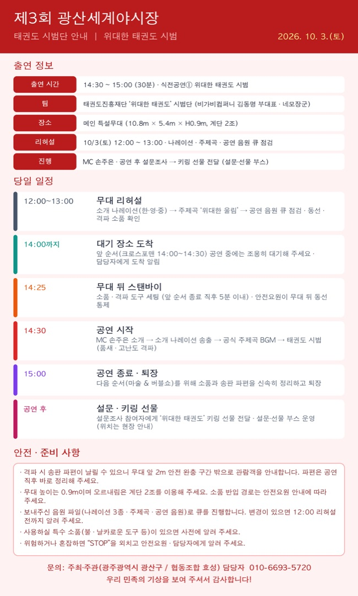

출연팀
위대한 태권도 시범단
14:30 식전공연① · 12:00 리허설

이미지를 누르면 크게 볼 수 있고, 길게 눌러 저장할 수 있습니다.
태권도진흥재단 ‘위대한 태권도’ 시범단(비가비컴퍼니 김동명 부대표님)은 올해 축제의 식전공연①을 맡아 주십니다.
10월 3일(토) 일정과 준비 사항을 안내드립니다. (첨부 이미지 참고)
출연 정보
- 일시: 2026. 10. 3.(토) 14:30 ~ 15:00 (30분) · 식전공연① 위대한 태권도 시범
- 장소: 광산구 월곡동 목련로 메인 특설무대 (10.8m × 5.4m × H0.9m, 계단 2조)
- 리허설: 10월 3일(토) 12:00 ~ 13:00 (소개 나레이션 · 주제곡 · 공연 음원 큐 점검)
- 진행: MC 손주은 / 공연 후 설문조사 → 키링 선물 전달
당일 일정
- 12:00~13:00 무대 리허설: 소개 나레이션(한·영·중) → 주제곡 ‘위대한 울림’ → 공연 음원 큐 점검, 동선·격파 소품 확인
- 14:00까지 대기 장소 도착 → 앞 순서(크로스포맨 14:00~14:30) 공연 중에는 조용히 대기, 담당자에게 도착 알림
- 14:25 무대 뒤 스탠바이 → 소품·격파 도구 세팅 (안전요원이 무대 뒤 동선 통제)
- 14:30 MC 손주은 소개 → 소개 나레이션 송출 → 공식 주제곡 BGM → 태권도 시범(품새·고난도 격파)
- 15:00 공연 종료·퇴장 (다음 순서 마술 & 버블쇼를 위해 소품과 송판 파편을 신속히 정리)
- 공연 후 설문조사 참여자에게 ‘위대한 태권도’ 키링 선물 전달 (설문·선물 부스 운영, 위치는 현장 안내)
- 같은 시간대에 삐에로가 객석 외곽·광장에서 풍선아트를 운영합니다.
안전·준비 사항
- 격파 시 송판 파편이 날릴 수 있으니 무대 앞 2m 안전 완충 구간 밖으로 관람객을 안내합니다. 파편은 공연 직후 바로 정리해 주세요.
- 무대 높이는 0.9m이며 오르내림은 계단 2조를 이용해 주세요. 소품 반입 경로는 안전요원 안내에 따라 주세요.
- 보내주신 음원 파일(나레이션 3종 · 주제곡 · 공연 음원)로 큐를 진행합니다. 변경이 있으면 12:00 리허설 전까지 알려 주세요.
- 사용하실 특수 소품(불·날카로운 도구 등)이 있으면 사전에 알려 주세요.
- 위험하거나 혼잡하면 “STOP”을 외치고 안전요원·담당자에게 알려 주세요.
궁금하신 점은 담당자(010-6693-5720)로 문의해 주세요.
우리 민족의 기상을 보여 주셔서 감사합니다.